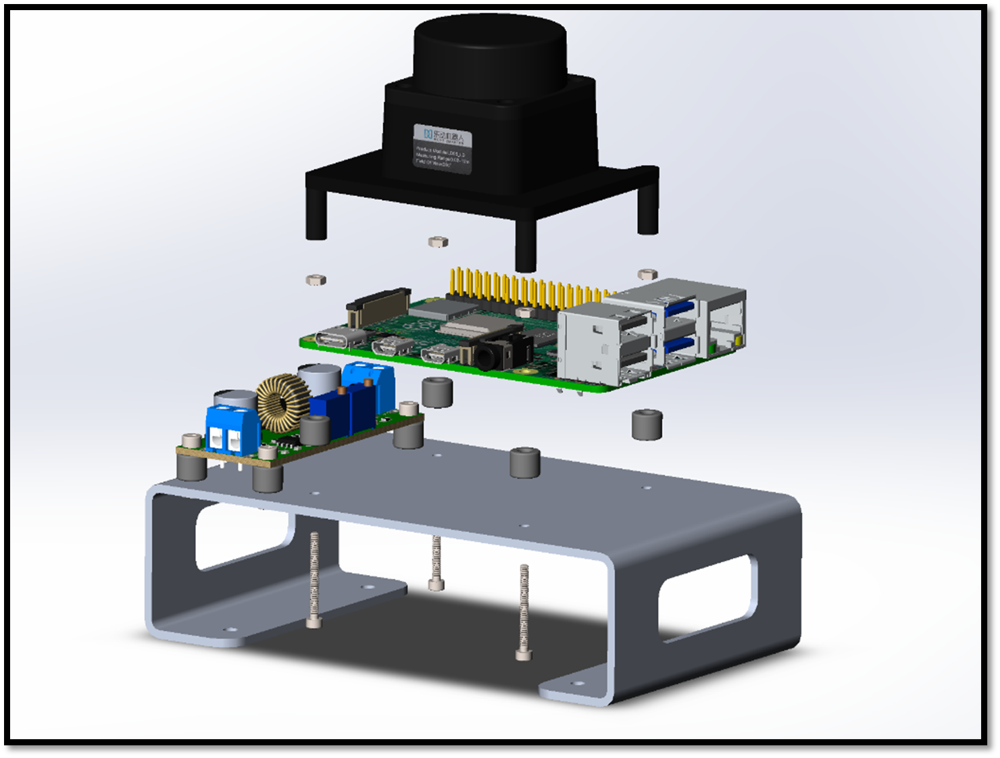

Here we are going to assemble the RILey robot in a particular order. It is recommended to follow this order to avoid issues with assembling the robot.
First we use 2x M5x30mm screws to screw the middlepart to the tailpart.
Put the stepper motors in the middlepart and use M3x8mm screws to secure them in place.
Make sure the Stepper Drivers and IMU are facing the correct orientation in order to make the electrical connections right.
Place the PCB on top of the middlepart(pillars) and secure it with 4x M3x10mm screws.
Slide the axel hubs onto the stepper motors shaft and secure it with using an M3 set screw. Make sure the set screw bottoms out on the flat surface of the stepper motor shaft.
Mount the TimeOfFlightMount with an M3x12mm screw and nut on the bottom hole on the front of the middlepart
Secure the Time Of Flight sensor with 2x M3x8mm screws and nuts on the TimeOfFlightMount
Mount the CameraMount on the upper hole on the front of the middlepart with a M3x12mm screw and nut
Secure the Camera to the CameraMount with 4x M2x6mm screws and nuts. Make sure the flat cable of the camera point to the top of the robot.
Grab the sheet metal 3rdFloor and use 4x spacers + 4x M2.5x12mm screws and nuts the secure the buckconverter.
Put the Raspberry Pi and lidar onto the sheet metal using 4x spacers + 4x M2x20mm screws and nuts. Before doing this you have to place the 3rdFloor loose on the robot (see next step). Then first attach the Camera flat camera into the Raspberry Pi before securing the lidar on top of it.

Now secure the 3rdFloor with 4x M3x10mm screws and nuts to the middlepart. You have to slide the 3rdFloor under the PCB from the back of the robot to successfully achieve this step.
Slide the battery packs into the robot. Make sure the cable face the to the front of the robot these need to stick out of the 2 big holes into the back of the middlepart of the robot. Then put on the BatteryFrontCover with 2x M2x10mm and 3x M2x16mm screws
Put the left and right BatteryBackCovers on with either 1x M2x10mm and 1x M2x16mm screw
Secure the BackWheel on the tailpart with 1x M6x45mm screw and nut
As last mount the left and right buggy wheels with either 1x M10 nut on the axel hubs.
Finished!!!